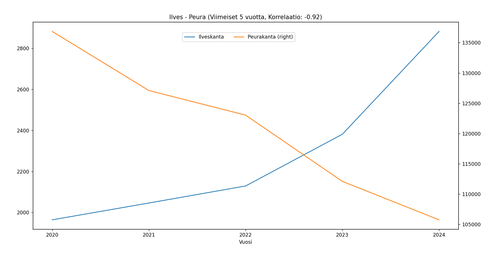
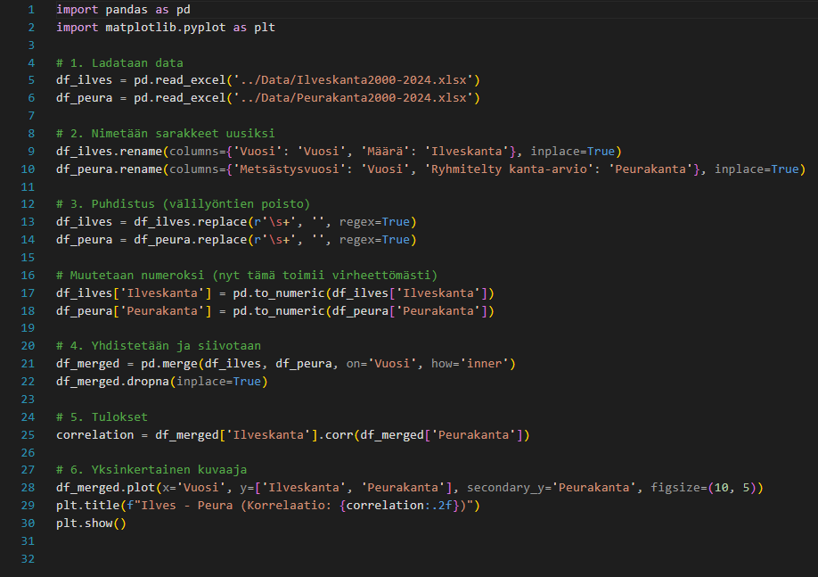
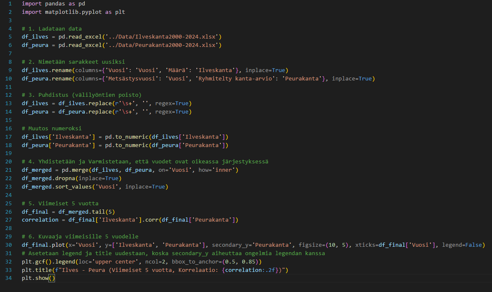

Ilves- ja peurakantojen korrelaatioanalyysi
Tämä projekti keskittyy analysoimaan ilves- ja peurakantojen välistä suhdetta Suomessa. Työn päätavoitteena oli selvittää tilastollisesti, miten ilveskannan kasvu on vaikuttanut peurakannan määrään viimeisten vuosikymmenten aikana.
Datan keruu ja esikäsittely
Analyysissa käytetty raakadata sisältää kanta-arviot vuosilta 2000–2024, ja se on peräisin Luonnonvarakeskukselta (LUKE). Prosessi alkoi lataamalla tiedot Excel- ja CSV-muodoissa. Datan ensimmäinen puhdistus tehtiin Excelin Power Querylla, jossa poistin turhat sarakkeet ja rajasin aineiston olennaisiin muuttujiin.
Python-integraatio ja analyysimenetelmät
Esikäsittelyn jälkeen aineisto siirrettiin Python-ympäristöön. Tämän vaiheen tarkoituksena oli harjaannuttaa taitoja Pandas-kirjaston käytössä ja data-analyysissa. Käytin Pythonia monimutkaisempiin puhdistustehtäviin, kuten säännöllisten lausekkeiden (Regex) käyttöön lukumuotoilujen ja tuhaterottimien korjaamiseksi, jotka olivat alkuperäisessä datassa epäyhtenäisiä.

Analyysin tulokset ja havainnot
Analyysi paljasti mielenkiintoisen muutoksen populaatioiden välisessä dynamiikassa. Tarkasteltaessa koko 25 vuoden historiaa, havaitaan kohtalainen positiivinen korrelaatio (0.57). Tämä viittaa siihen, että pitkällä aikavälillä molemmat lajit ovat hyötyneet samoista suotuisista ympäristötekijöistä.
Tilanne kuitenkin muuttuu merkittävästi, kun tarkastelu rajataan viimeiseen viiteen vuoteen (2020–2024). Tällöin korrelaatio muuttuu erittäin vahvaksi ja negatiiviseksi (-0.92). Tämä lähes täydellinen käänteinen suhde osoittaa, että ilveskannan nopea kasvu on kulkenut käsi kädessä peurakannan huomattavan laskun kanssa, mikä viittaa petopaineen kasvuun.
Projektin lähdekoodi
Koko aineiston analyysi
Ja vain viimeiset 5 vuotta
